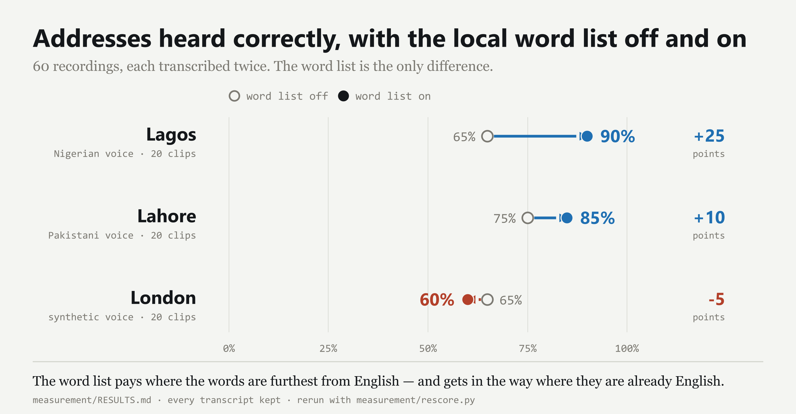

The driver talks. The record writes itself.
The scanner will not let a driver move on without an outcome. It asks for nothing else.
Three weeks later a customer says nothing arrived. The three blanks are the only thing that would have settled it.
It is handed the list of still-empty fields on every turn, and only decides how to ask.
The loop runs until nothing is missing, then it reads the record back and closes.
Say all of it in one breath — “left it with Ademola the gateman at the black gate” — and the first answer is already nothing missing, so it asks nothing. No prompt was changed to make that happen.
Collapsing them is how a delivery record starts to lie.
What the driver said. In their words, and in their voice.
What the phone saw. Time, location, distance from the address, whether the vehicle was stopped.
What the customer gave. Usually nothing — and we say so, rather than leave it looking settled.
A field can cite the turn of audio it came from. Only cited turns ever leave the phone; everything else is thrown away when the session ends. The privacy rule is enforced by what uploads, not by a promise.

An evidence layer beside the scanner a carrier already runs.
A structured record, with the driver's own audio attached to the field it proves.
Proof of delivery. A driver's recording is a statement by someone with an interest in it.
Scans, photos and signatures are the proof — and those tools already exist.
Bought by the operations manager with 20–200 drivers, who loses money on failed deliveries and on disputes, and has nothing but a dropdown to show for either.
Every transcript behind the numbers is in the repository.